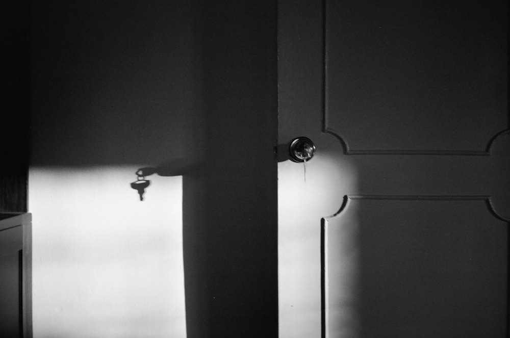
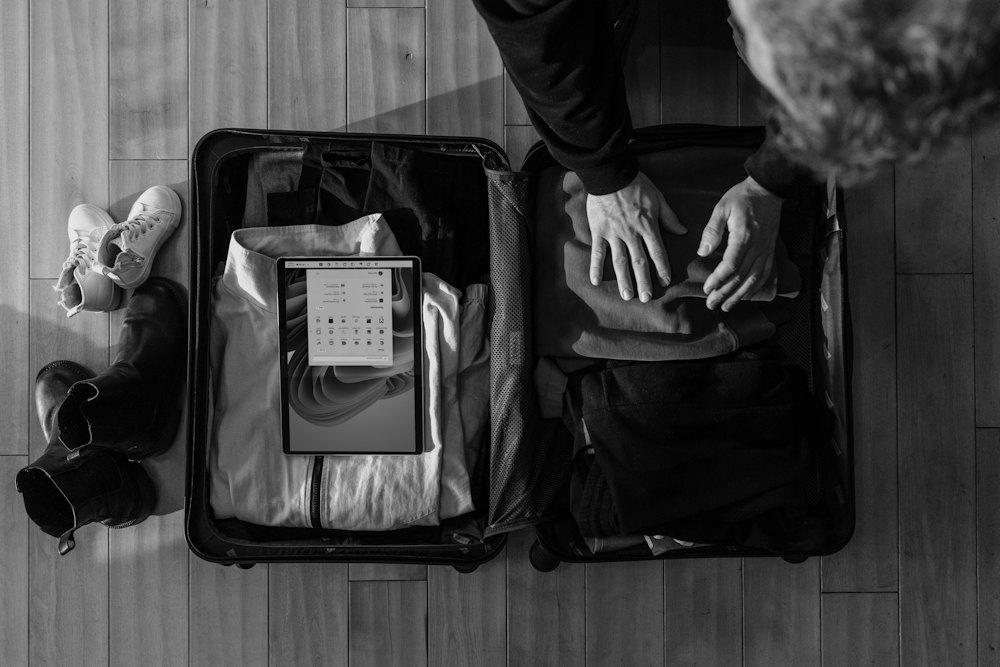

Инструкция для пострадавших
Что можно сделать
Шесть шагов. Их не нужно проходить все сразу и по порядку. Выберите тот, на который сейчас есть силы. Решение всегда остаётся за вами.
-
Если опасно прямо сейчас
Позвоните в экстренную службу. Если говорить можно только коротко — назовите адрес и скажите, что вам угрожают.
112бесплатно, даже без денег на счётеЕсли позвонить нельзя, уйдите туда, где есть выход и люди: к соседям, в подъезд, на улицу. Держитесь подальше от кухни и ванной — там легче пораниться.

-
Поговорить с кем-то
Всероссийский телефон доверия для женщин. Вас выслушают, помогут составить план и подскажут организации в вашем городе.
8 800 7000-600бесплатно, анонимно, круглосуточноИмя называть не обязательно. Если звонить неудобно — можно написать: помощь в переписке есть в блоке «Всероссийские линии».
Можно рассказать и человеку, которому вы доверяете. Договоритесь с ней о кодовом слове: если вы его напишете, она поймёт, что нужна помощь.
-
Подготовить план
Уходить безопаснее по плану, а не в момент ссоры.
- Документы и немного денег — в одном месте или у подруги.
- Два-три номера выучить наизусть.
- Первая ночь: подумать, куда можно пойти.

-
Необязательно
Зафиксировать случай
Помощь в центрах можно получить и без этого шага. Но записи пригодятся, если позже вы решите делить имущество, решать вопросы с детьми или идти в суд.
- Травмпункт или врач. Попросите записать все повреждения и выдать справку — даже если вы пока ничего не решили.
- Полиция. Заявление можно подать, можно не подавать. Некоторые госцентры просят справку о побоях или талон из полиции — уточните при звонке.
- Переписка и фото. Храните копии там, где у него нет доступа: у подруги или в почте, пароль от которой он не знает.
Если не знаете, что делать дальше, бесплатно помогают юристы — например, Консорциум женских неправительственных объединений.
-
Найти центр
На карте — центры по регионам России: можно ли с детьми, нужна ли прописка, работают ли круглосуточно. У каждого есть готовая фраза для звонка.
Адресов убежищ на сайте нет: центр называет адрес сам, по телефону. Свободные места уточните при звонке — или попросите менеджера позвонить за вас.
-
Что дальше
Чаще всего сначала нужна психологическая поддержка: чтобы стало спокойнее и появились силы думать.
- Психолог — в большинстве центров и на телефоне доверия.
- Юрист — развод, алименты, жильё, дети. Можно позже и в своём темпе. На карте есть фильтр «Юрист».
- В убежище обычно просят не пользоваться своим телефоном и не говорить, где вы, даже общим знакомым. Это правило защищает вас.
Если вы вернулись — это не провал
Многие женщины уходят не с первого раза. Держат страх, дети, деньги, обещания, что «такого больше не будет». Это не ваша слабость: из таких отношений трудно выйти.
Сюда можно прийти снова. Центры и линии помогают и тем, кто вернулся.